Chapter 1 Correlation, Association, and the Yule–Simpson Paradox
Causality is central to human knowledge. Two famous quotes from ancient Greeks are below.
“I would rather discover one causal law than be King of Persia.”
— Democritus
“We do not have knowledge of a thing until we grasped its cause.”
— Aristotle
However, the major part of classic statistics is about association rather than causation. This chapter will review some basic association measures and point out their fundamental limitations.
1 Traditional view of statistics
A traditional view of statistics is to infer correlation or association among variables. Based on this view, there is no role for causal inference in statistics. Two famous aphorisms associated with this view are as follows:
- •
“Correlation does not imply causation.”
- •
“You can not prove causality with statistics.”
This book has a very different view: statistics is crucial for understanding causality. The main focus of this book is to introduce the formal language for causal inference and develop statistical methods to estimate causal effects in randomized experiments and observational studies.
2 Some commonly-used measures of association
2.1 Correlation and regression
The Pearson correlation coefficient between two random variables  and
and  is
is
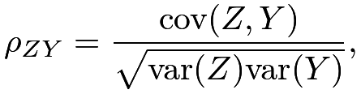 |
which measures the linear dependence of and
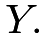
The linear regression of on is the model
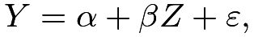 |
(1) |
where  and
and  . We can show that the regression coefficient
. We can show that the regression coefficient  equals
equals
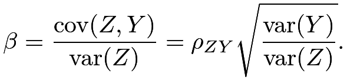 |
So and
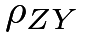
always have the same sign.We can also define multiple regression of on and  :
:
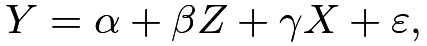 |
(2) |
where
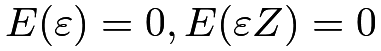
and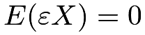
. We usually interpret as the “effect” of on , holding constant or conditioning on or controlling for . Chapter 31 reviews the basics of linear regression.
More interestingly, the ’s in the above two regressions (1) and (2) can be different; they can even have different signs. The following R code reanalyzed the LaLonde observational data used by Hainmueller, (2012). The main question of interest is the “causal effect” of a job training program on earnings. The regression controlling for all covariates gives a coefficient 1067.5461 for treat, whereas the regression not controlling for any covariates gives a coefficient -8506.4954 for treat.
2.2 Contingency tables
We can represent the joint distribution of two binary variables and by a two-by-two contingency table. With
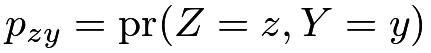
, we can summarize the joint distribution in the following table: |
 | |
|---|---|---|
 |
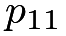 |
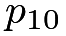 |
 |
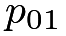 |
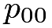 |
Viewing as the treatment or exposure and as the outcome, we can define the risk difference as
| rd |  |
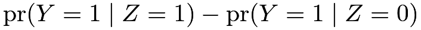 |
||
|
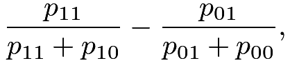 |
the risk ratio as
| rr | |
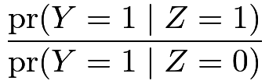 |
||
|
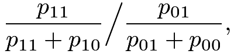 |
and the odds ratio1 as
| or | |
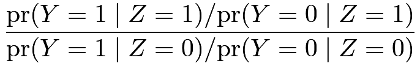 |
||
|
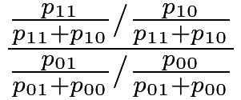 |
|||
|
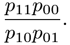 |
The terminology “risk difference”, “risk ratio”, and “odds ratio” comes from epidemiology. Because the outcomes in epidemiology are often diseases, it is natural to use the name “risk” for the probability of having diseases.
We have the following simple facts about these measures.
Proposition 1.1
(1) The following statements are all equivalent2: 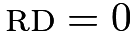 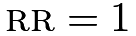 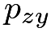 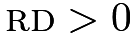 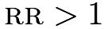 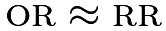 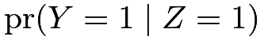 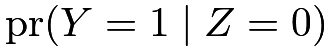 ,
,
I leave the proofs of statements (1) and (2) as Problem 1.1. Statement (3) is informal. The approximation holds because the odds
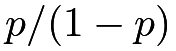
is close to the probability for rare diseases with
for rare diseases with 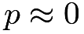
: by Taylor expansion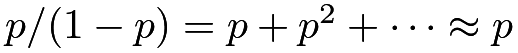
. In epidemiology, if the outcome represents the occurrence of a rare disease, then it is reasonable to assume that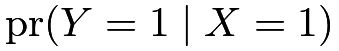
and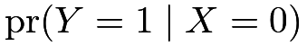
are small.We can also define conditional versions of the rd, rr, and or if the probabilities are replaced by the conditional probabilities given another variable , i.e.,
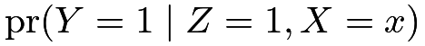
and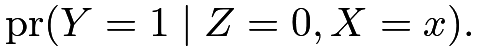
With counts
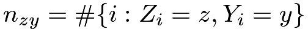
, we can summarize the observed data in the following two-by-two table: |
| |
|---|---|---|
|
 |
 |
|
 |
 |
We can estimate rd, rr, and or by replacing the true probabilities by the sample proportions
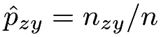
, where is the total sample size (see Chapter 30.C.2). In R, functions fisher.test performs an exact test and chisq.test performs an asymptotic test for based on a two-by-two table of observed data.
is the total sample size (see Chapter 30.C.2). In R, functions fisher.test performs an exact test and chisq.test performs an asymptotic test for based on a two-by-two table of observed data.
Example 1.1
Bertrand and Mullainathan, (2004) conducted a randomized experiment on resumes to study the effect of perceived race on callbacks for interviews. They randomly assigned Black-sounding or White-sounding names on fictitious resumes to help-wanted ads in Boston and Chicago newspapers. The following two-by-two table summarizes perceived race and callback:
The two rows have the same total count, so it is apparent that White-sounding names received more callbacks. Fisher’s exact test below shows that this difference is statistically significant.
3 An example of the Yule–Simpson Paradox
3.1 Data
The classic kidney stone example is from Charig et al., (1986), where is the treatment with  for an open surgical procedure and
for an open surgical procedure and  for a small puncture procedure, and is the outcome with for success and for failure. The treatment and outcome data can be summarized in the following two-by-two table:
for a small puncture procedure, and is the outcome with for success and for failure. The treatment and outcome data can be summarized in the following two-by-two table:
|
| |
|---|---|---|
|
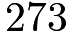 |
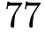 |
|
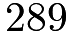 |
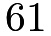 |
The estimated rd is
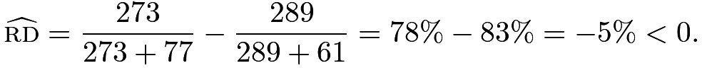 |
Treatment 0 seems better, that is, the small puncture leads to a higher success rate compared to the open surgical procedure.
However, the data were not from a randomized controlled trial (RCT)3. Patients receiving treatment can be very different from patients receiving treatment . A “lurking variable” in this study is the severity of the case: some patients have smaller stones and some patients have larger stones. We can split the data according to the size of the stones.
For patients with smaller stones, the treatment and outcome data can be summarized in the following two-by-two table:
|
| |
|---|---|---|
|
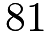 |
 |
|
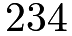 |
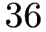 |
For patients with larger stones, the treatment and outcome data can be summarized in the following two-by-two table:
|
| |
|---|---|---|
|
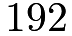 |
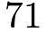 |
|
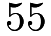 |
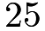 |
The latter two tables must add up to the first table:
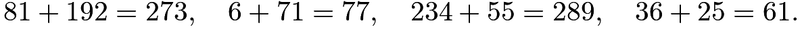 |
From the table for patients with smaller stones, the estimated rd is
suggesting that treatment 1 is better. From the table for patients with larger stones, the estimated rd is
also suggesting that treatment 1 is better.
The above data analysis leads to
Informally, treatment 1 is better for both patients with smaller and larger stones, but treatment 1 is worse for the whole population. This interpretation is quite confusing if the goal is to infer the treatment effect. In statistics, this is called the Yule–Simpson Paradox or Simpson’s Paradox in which the marginal association has the opposite sign to the conditional associations at all levels.
3.2 Explanation
Let be the binary indicator with for smaller stones and for larger stones.
Let us first take a look at the – relationship by comparing the probabilities of receiving treatment 1 among patients with smaller and larger stones:
|
||||
|
||||
|
So patients with larger stones tend to take treatment 1 more frequently. Statistically, and have negative association.
Let us then take a look at the – relationship by comparing the probabilities of success among patients with smaller and larger stones: under treatment 1,
|
||||
|
||||
|
under treatment 0,
|
||||
|
||||
|
So under both treatment levels, patients with smaller stones have higher success probabilities. Statistically, and have positive association conditional on both treatment levels.
We can summarize the qualitative associations in the diagram in Figure 1. In technical terms, the treatment has a positive path and a more negative path to the outcome, so the overall association is negative between the treatment and outcome. In plain English, when less effective treatment 0 is applied more frequently to the less severe cases, it can appear to be a more effective treatment.
In general, the association between and can differ qualitatively from the conditional association between and given due to the association between and and the association between and . When the Yule–Simpson Paradox happens, we say that is a confounding variable or confounder for the relationship between and , or and are confounded by . See Chapters 10 and 17 for more in-depth discussion.
3.3 Geometry of the Yule–Simpson Paradox
Assume that the two-by-two table based on the aggregated data has counts
| whole population | |
|
|---|---|---|
|
|
|
|
|
|
The two two-by-two tables based on subgroups have counts
| subpopulation | |
|
|---|---|---|
|
||
|
for the subgroup with and
| subpopulation | |
|
|---|---|---|
|
||
|
for the subgroup with
Figure 2 shows the geometry of the Yule–Simpson Paradox. The y-axis shows the count of successes with and the x-axis shows the count of failures with . The two parallelograms correspond to aggregating the counts of successes and failures under two treatment levels. The slope of is larger than that of , and the slope of is larger than that of . So the treatment seems beneficial to the outcome within both levels of . However, the slope of is smaller than that of . So the treatment seems harmful to the outcome for the whole population. The Yule–Simpson Paradox arises.
4 The Berkeley graduate school admission data
Bickel et al., (1975) investigated the admission rates of male and female students into the graduate school of Berkeley. The R package datasets contains the original data UCBAdmissions. The raw data by the six largest departments are shown below:
Aggregating the data over departments, we have a simple two-by-two table:
The following function, building upon chisq.test, have a two-by-two table as the input and the estimated rd and -value as output:
With this function, we find a large, significant difference between the admission rates of male and female students:
Stratifying on the departments, we find smaller and insignificant differences between the admission rates of male and female students. In department A, the difference is significant but negative.
5 Homework Problems
1.1 Independence in two-by-two tables
Prove (1) and (2) in Proposition 1.1.
1.2 More examples of the Yule–Simpson Paradox
Give a numeric example of a two-by-two-by-two table in which the Yule–Simpson Paradox arises.
Find a real-life example in which the Yule–Simpson Paradox arises.
1.3 Correlation and partial correlation
Consider a three-dimensional Normal random vector:
The correlation coefficient between and is .
There are many equivalent definitions of the partial correlation coefficient.
For a multivariate Normal vector, let denote the partial correlation coefficient between and given , which is defined as their correlation coefficient in the conditional distribution . Show that
Give a numerical example with and .
Remark: This is the Yule–Simpson Paradox for a Normal random vector. You can use the results in Chapter 30.A.2 to prove the formula for the partial correlation coefficient.
1.4 Specification searches
Section 2.1 re-analyzes the data used by Hainmueller, (2012). We used the outcome named re78 and the treatment named treat in the analysis. Moreover, the data also contain  covariates and therefore
covariates and therefore  possible subsets of covariates in the linear regression. Run linear regressions with all possible subsets of covariates, and report the regression coefficients of the treatment. How many coefficients of the treatment are positively significant, how many are negatively significant, and how many are not significant? You can also report other interesting findings from these regressions.
possible subsets of covariates in the linear regression. Run linear regressions with all possible subsets of covariates, and report the regression coefficients of the treatment. How many coefficients of the treatment are positively significant, how many are negatively significant, and how many are not significant? You can also report other interesting findings from these regressions.
1.5 More on racial discrimination
Section 2.2 re-analyzes the data collected by Bertrand and Mullainathan, (2004). Conduct analyses separately for males and females. What do you find from these subgroup analyses?
1.6 Recommended reading
Bickel et al., (1975) is the original paper for the paradox reported in Section 4. Pearl and Mackenzie, (2018) recently revisited the study from the causal inference perspective.
脚注
1. In probability theory, the odds of an event is defined as the ratio of the probability that the event happens over the probability that the event does not happen.
2. This book uses the notation to denote independence or conditional independence of random variables. The notation is due to Dawid, (1979).
3. In an RCT, patients are randomly assigned to the treatment arms. Part II of this book will focus on RCTs.